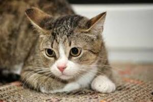

Um gatinho de olhos marrons e pelagem malhada é realmente adorável! Geralmente, os gatos com essa combinação de cores têm um visual muito cativante e único. A pelagem malhada adiciona uma dose extra de charme, enquanto os olhos marrons costumam transmitir uma sensação de doçura e calma. Tenho certeza de que quem adotar esse gatinho estará levando para casa um companheiro cheio de personalidade e beleza. Desejo muitas felicidades para quem decidir dar um lar para esse gatinho especial!

voltar para principal